Julietta Bisharyan is a reporter based in San Diego. She holds a bachelor’s degree in English from the UC Davis and a master’s degree in multimedia journalism from the UC Berkeley.
Her work has been published in The Modesto Bee, The Sacramento Bee, East Bay Times, Berkeleyside, AfroLA and Armenian Weekly.
Email: jsbisharyan@gmail.com
Selected Writing
Investigations
Environment
Labor
Policy
Education
Data & Projects
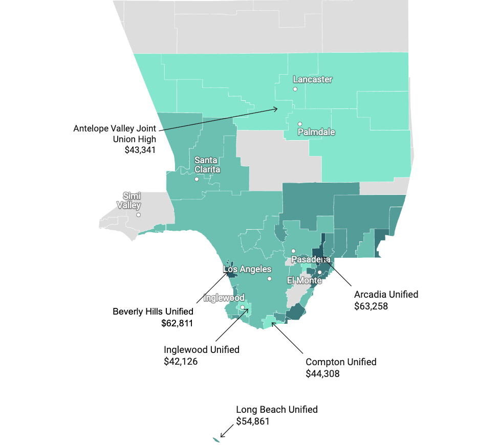
L.A. County doesn’t have enough teachers. Low pay and burnout aren’t helping the problem
AfroLA News · August 2023
Examining teacher shortages across Los Angeles County and the role of low pay and burnout.
The Cost of Teaching
UC Berkeley Graduate School of Journalism · May 2023
An interactive choose-your-own-adventure project exploring the financial realities of becoming a teacher.
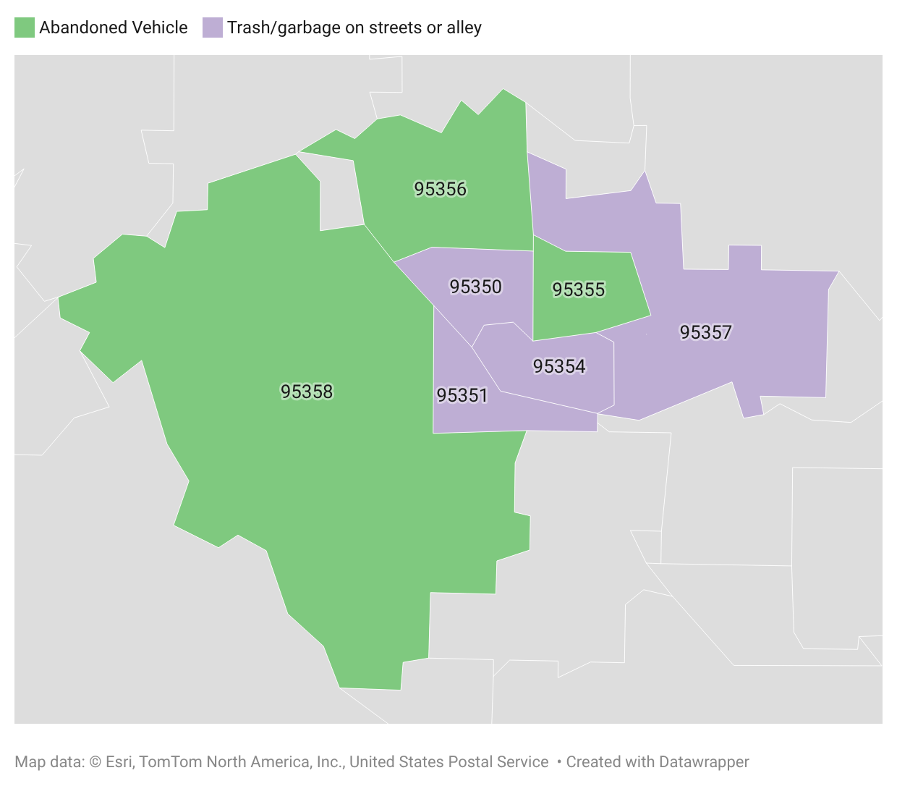
What are Modesto residents complaining about?
The Modesto Bee · July 2026
Using complaint records to examine patterns.
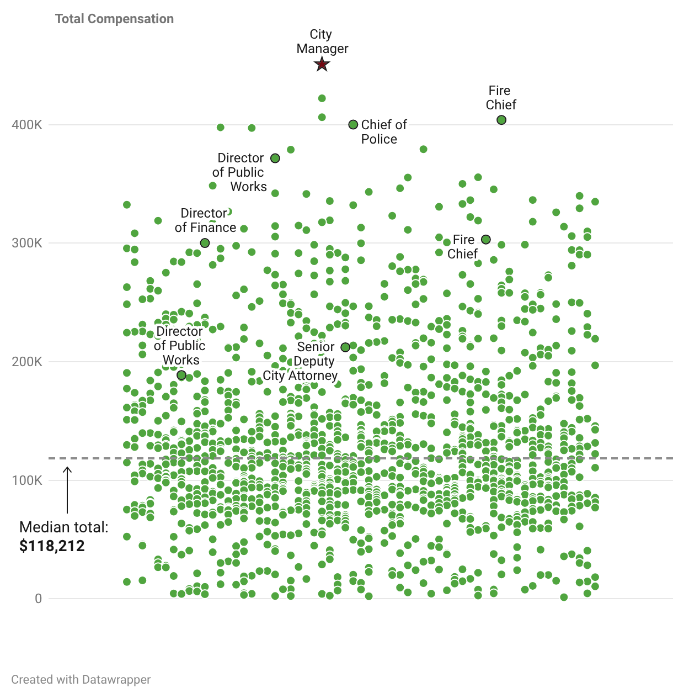
Who makes the most at Modesto city hall?
The Modesto Bee · February 2026
Analyzing public employee compensation to identify the highest-paid city workers.
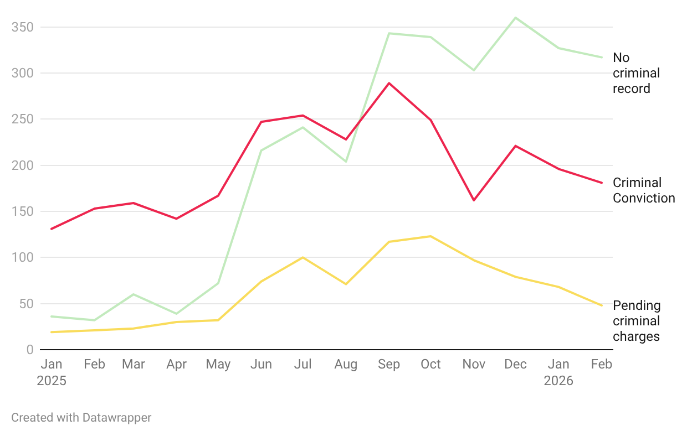
ICE arrested 18 in Stanislaus County over last 6 months.
The Modesto Bee · April 2026
Analyzing local immigration enforcement activity through arrest data.
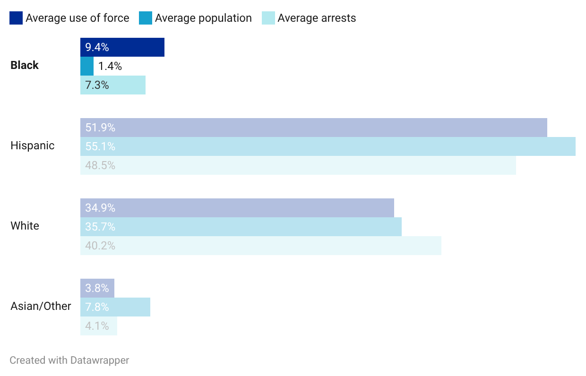
Black people in Stanislaus County over-represented in use of force cases by Sheriff’s Office
The Modesto Bee · April 2025
Analyzing law enforcement use-of-force records to investigate racial disparities in Stanislaus County.
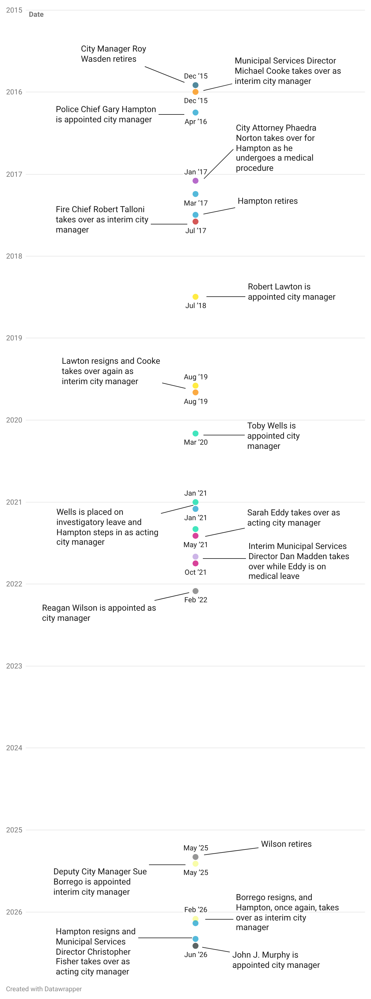
Turlock City Manager Turnover
The Modesto Bee · July 2026
Examining high turnover among high-ranking positions in local government.
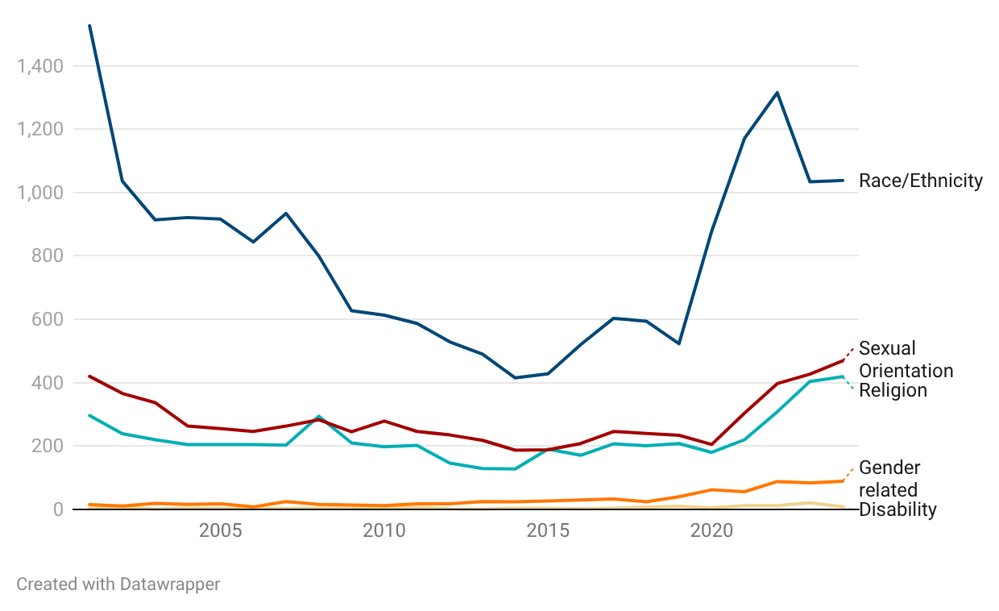
While hate crimes were up in the state, Stanislaus County was at a 10-year low
The Modesto Bee · December 2025
Using crime data to examine hate crime trends and patterns.
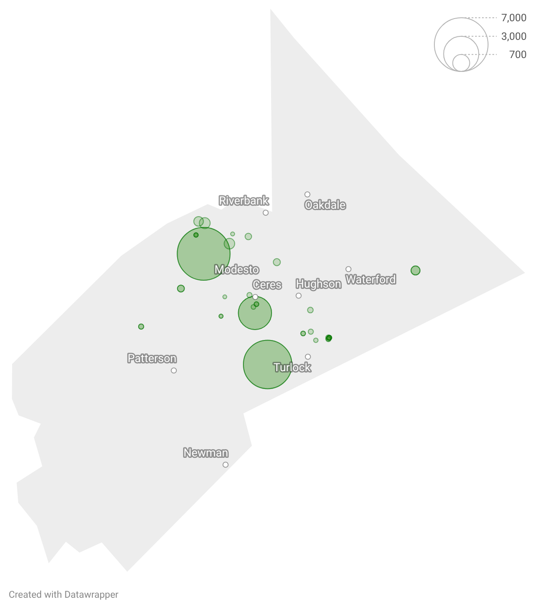
Pesticides waft near Stanislaus County schools. Which are at highest risk?
The Modesto Bee · November 2025
Investigating pesticide exposure near schools using data.
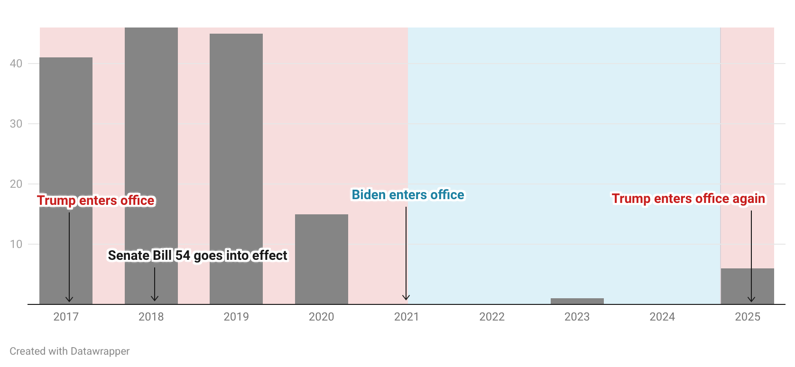
Under Trump, Stanislaus jail transfers to ICE are back
The Modesto Bee · October 2025
Tracking immigration enforcement activity through transfer records.
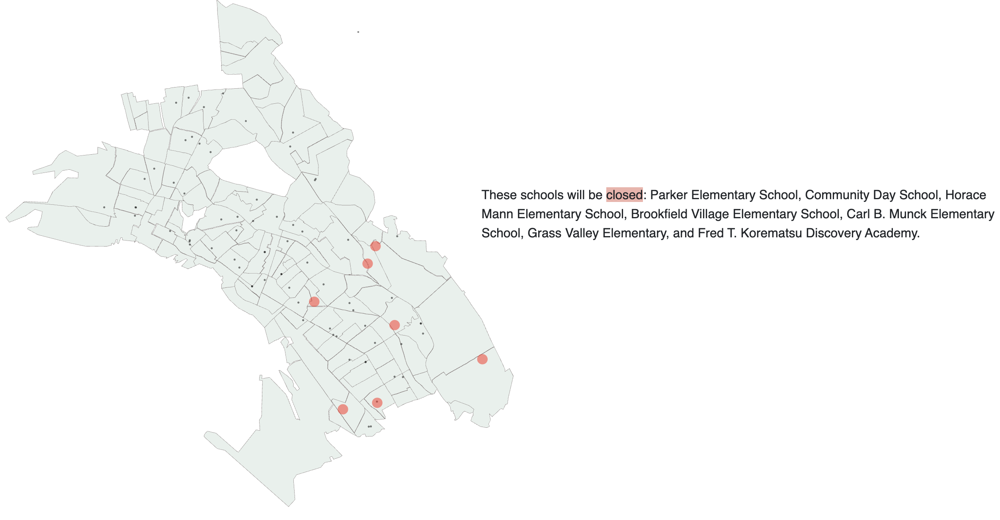
Oakland Unified School District School Closures
UC Berkeley Graduate School of Journalism · March 2022
Reporting on school closures in Oakland and its impact on students.
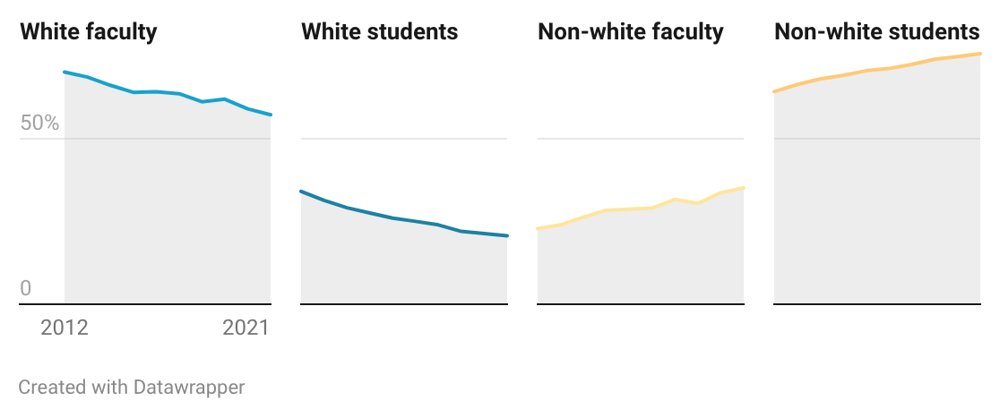
Stanislaus County colleges behind in faculty diversity
The Modesto Bee · February 2024
Examining college demographics and the gap between student and faculty diversity.
Data analysis · Education reporting